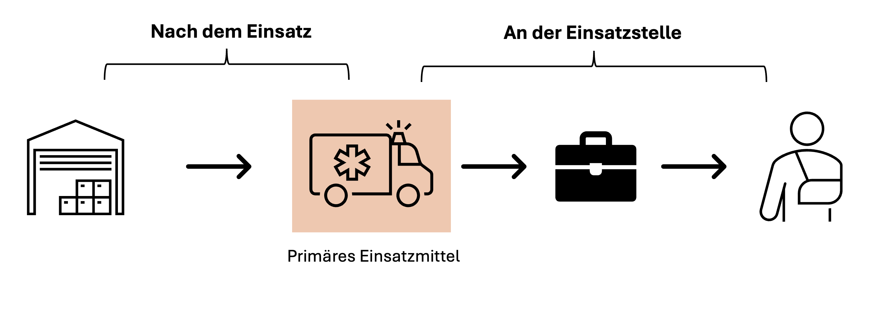

RobuCheck Helpdesk
Vielen Dank, dass du RobuCheck verwendest. Auf dieser Seite stellen wir (provisorischen) Support zur Nutzung von RobuCheck für Helferinnen und Helfer des Deutschen Roten Kreuzes zur Verfügung.
Homepage und Zugangsprofile
Die Homepage ermöglicht einen schnellen Start in die Funktionen und erleichtert die Bedienung von RobuCheck. Hierfür ist es notwendig, beim Start der App die Felder Einsatzmittel und Veranstaltung auszufüllen.
Diese Angaben werden täglich gegen 03:00 Uhr morgens zurückgesetzt, um ein fehlerhaftes Übernehmen in Folgedienste zu vermeiden. Insofern ist ein "Ausbuchen" nach dem Dienst nicht erforderlich und im Übrigen technisch auch nicht möglich.
Die Angaben zu Veranstaltung und Einsatzmittel sollten grundsätzlich bei Dienstbeginn überprüft werden.
Primäres Einsatzmittel
Als primäres Einsatzmittel im Kontext der Homepage sollte dasjenige Einsatzmittel gewählt werden, aus dem final die meisten Sachen entnommen werden und das auf der Wache wieder aufgefüllt wird. Dies kann ein Fahrzeug, ein Case oder ein Rucksack sein. Der Wert dient als Standard-Vorschlag für Verbrauchsberichte.

Abb. 1: Konzept primäres Einsatzmittel als Vorschlagswert für die Verbrauchsberichte
Veranstaltung
Die Veranstaltung muss aus der Liste der aktuellen Veranstaltungen ausgewählt werden, die Bezeichnung stimmt in der Regel mit der offiziellen Bezeichnung in HiOrg überein. Im Zweifelsfall kann die Dienstnummer (z.B. 24/26) verglichen werden. Sie ist Teil jeder Bezeichnung.
Veranstaltungen können durch die Nutzer nicht selbst angelegt werden, dies ist nur über das Admin-Portal möglich. Sollte eine Veranstaltung bei Dienstbeginn nicht angelegt sein, bitten wir um kurze telefonische Rückmeldung.
Zugangsprofile
Der Zugang erfolgt mobil über die AppSheet-App oder am Desktop über den Browser. Ein Login ist zwingend erforderlich.
Die Accounts der Dienstgeräte haben einen eigenen Zugang. Wenn du die App zusätzlich auf deinem privaten Gerät installieren willst, kannst du dich über den Terminal-Account einloggen. Die Zugangsdaten erhältst du bei deinen Materialwarten auf Anfrage.
Beachte bei der Nutzung eines Terminal-Accounts, dass ggf. falsche Angaben in den Verbrauchsberichten entstehen können.
Reiter Mein Verbrauch
Über den Button "Mein Verbrauch" kann eine Übersicht über alle bisher angelegten Verbrauchsberichte für die gegenwärtig ausgewählte Veranstaltung angezeigt werden. Sie dient insbesondere auch dazu, das koordinierte Nachfüllen nach einem Dienst zu ermöglichen.
Verbrauchsberichte werden kategorisiert nach dem Einsatzmittel, aus dem sie entnommen wurden; sekundär nach dem Datum der Entnahme. Ein Abkreuzen und damit Eintragen als "Ist aufgefüllt" nach dem Dienst hilft euch sowie uns bei der Nachverfolgung und Bestandskontrolle.
Checklisten
Über die Checklisten können die Bestände kontrolliert werden und damit die Einsatzbereitschaft des Einsatzmittels überprüft werden. Gleichzeitig sind die Angaben für uns hier besonders wichtig: sie erleichtern uns massiv den Überblick über alle Positionen, indem wir den Zustand, Ablaufdaten und mehr direkt einsehen und speichern können. Indem ihr die Angaben in den Checklisten pflegt, tragt ihr erheblich zur Einsatzbereitschaft der Einsatzmittel bei.
Auswahl der richtigen Checkliste
Über die Funktion "Checklisten" (Homepage unten rechts) können alle Checklisten ausgewählt werden. Bitte stelle sicher, dass du die richtige Checkliste ausgewählt hast. Alternativ kann über das Drei-Strich-Menü oben rechts eine Übersicht über alle Checklisten erreicht werden.
Die Aufstellung erfolgt gegliedert nach Art des Einsatzmittels.
Der Button "Checkliste" auf der Homepage im oberen linken Quadranten führt direkt zur Checkliste des primären Einsatzmittels.
In der Checkliste können die Produkte nach Lagerort angesteuert werden, hierüber erfolgt die Auswahl.
Datensatzstruktur
Die Datensätze enthalten folgende Angaben (Datum und Druck nur, wenn erforderlich):
- Rückmeldung: Hier wird der Funktionszustand übergeben. Eine Fehlermeldung sollte dann eingetragen werden, wenn die Gründe für eine Fehlermeldung vorliegen. Sie kann auch über die Daumen-Symbole geändert werden.
- Textliche Anmerkung: Ist eine Fehlermeldung erforderlich, dann kannst du hier weitere Angaben für uns hinterlegen, z.B. den Fehler näher beschreiben.
- Datum: Gebe hier das nächste Verfallsdatum ein. Beachte die Hinweise zur Definition des nächsten Verfallsdatum.
- Druck: Gebe hier den aktuellen Druck in der Sauerstoffflasche ein.
Symbole in der Checklisten-Übersicht können auf fehlende Angaben oder Fehlermeldungen hinweisen.
Wichtig: Mit dem Löschen einer Fehlermeldung wird auch die textliche Anmerkung automatisch gelöscht.
Verbrauchsdokumentation
Hier erläutern wir dir, wie du neue Verbrauchsberichte schreiben und deinen Verbrauch dokumentieren kannst.
Anwendungsbeispiel
[Platzhaltertext: Ein kurzes Beispiel, wie diese Funktion im Alltag genutzt wird.]
Auf der Homepage den Reiter 'Mein Verbrauch' auswählen. Anders als hier gezeigt sollten die Felder Einsatzmittel und Veranstaltung bereits ausgefüllt sein.
Troubleshooting und FAQs
Abschließend noch ein paar Worte zum Troubleshooting und FAQs.
- Datenaktualisierung: Beim Verbrauch und dem anschließenden Auffüllen kann es sich ergeben, dass Produkte unterschiedlichen Ablaufdatums an andere Positionen geräumt werden. Die Änderungen müssen derzeit noch manuell dokumentiert werden, indem die Einträge für die jeweiligen Positionen einzeln akutalisiert werden. Das bedeutet: Eintrag beider Positionen aufrufen und das Datum anpassen.
Besondere Funktionen
Es gibt einige besondere Funktionen, die die Arbeit erleichtern.
Einlesen von Daten via SecurPharm
Für einige Artikel ist das Einlesen von Daten via SecurPharm möglich.
Dieser Abschnitt wird gegenwärtig noch überarbeitet.
Weitere Feststellungen und Definitionen
Wie wird ein Datum verstanden?
Liegt ein Datum im Format DD-MM-YYYY vor, so ist das Verfallsdatum dieses Datum. Liegt ein Datum im Format MM-YYYY vor, so ist immer der 1. des Monats anzugeben. (Systemstandard)